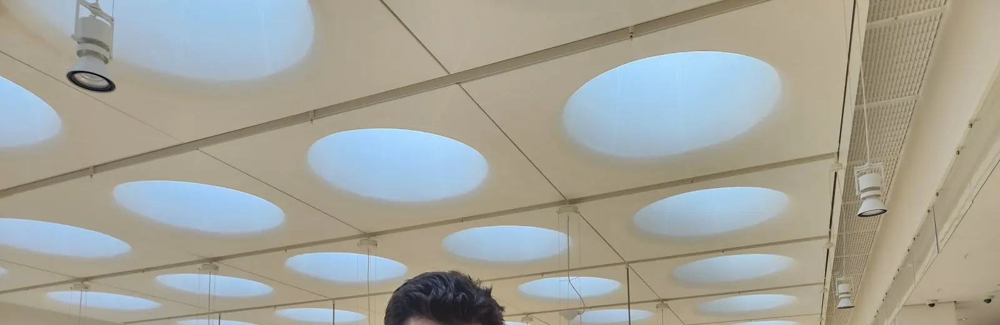

Avocat au Barreau de Paris · Droit pénal
Charles Culioli-Paoli,
avocat pénaliste à Paris
Une défense pénale exigeante et discrète, de la garde à vue à l'exécution de la peine, pour les personnes mises en cause comme pour les victimes.

- Formation
- LL.M., Harvard Law School
- Formation
- Master, École de droit de Sciences Po
- Inscription
- Barreau de Parisà confirmer
- Langues
- Français, anglais, espagnol, arabe, corse

« Chaque dossier pénal raconte une histoire incomplète. Le travail de l'avocat est de la lire entièrement, puis de la rendre audible devant le juge. »
Charles Culioli-Paoli · formulation à valider

Le cabinet
Un avocat indépendant, un interlocuteur unique
Charles Culioli-Paoli exerce en droit pénal à Paris. Chaque dossier est suivi personnellement, du premier échange jusqu'à la décision, avec la même exigence de rigueur et de discrétion.
Formé à l'École de droit de Sciences Po puis à Harvard Law School, il a acquis son expérience auprès de cabinets pénalistes parisiens reconnus, au Parquet de Paris et au ministère de l'Économie.à confirmer
Découvrir le parcoursDomaines d'intervention
Le droit pénal, dans toutes ses dimensions
De l'enquête à l'exécution de la peine, en France et dans les dossiers internationaux.
- 01
Droit pénal général
Personnes mises en cause et victimes, de l'enquête à l'audience.
- 02
Droit pénal des affaires
Abus de biens sociaux, blanchiment, fraude fiscale, corruption.
- 03
Extradition
Mandat d'arrêt européen et demandes d'extradition.
- 04
Droit pénal international
Notice rouge Interpol, entraide pénale, dossiers transfrontières.
- 05
Aménagement de peine
Bracelet électronique, semi-liberté, libération conditionnelle.
- 06
Cybercriminalité
Cyberattaques, fraude informatique, escroqueries en ligne.
- 07
Plaidoirie
Tribunal correctionnel, cour criminelle départementale, cour d'assises.
Méthode
Une défense construite avec vous
La relation avec la personne défendue repose sur la clarté : comprendre, expliquer, décider ensemble.
- 01
Le premier échange
Un entretien confidentiel pour comprendre la situation, les échéances et les attentes. Les honoraires sont présentés et font l'objet d'une convention écrite.
- 02
L'analyse du dossier
Une lecture complète de la procédure, un contrôle de la régularité de chaque acte et une évaluation honnête des risques.
- 03
La stratégie
Les options sont exposées clairement : actes à demander, nullités, issue négociée ou défense au fond. La décision vous appartient.
- 04
La défense et le suivi
Présence aux auditions et aux audiences, information à chaque étape, puis accompagnement jusqu'à l'exécution de la décision.
Parcours
Paris, Cambridge, le Parquet
Une formation académique internationale, une expérience des deux côtés de la barre.
Formation
- LL.M., Harvard Law School
- Cambridge, Massachusettsà confirmer
- Master en droit, École de droit de Sciences Po
- Parisà confirmer
Expérience
- Fedida & Associés
- Cabinet de défense pénale, Parisà confirmer
- Schapira Associés
- Cabinet de défense pénale, Parisà confirmer
- Parquet de Paris
- Ministère publicà confirmer
- Ministère de l'Économie
- Administration centraleà confirmer
- Barreau de Paris
- Prestation de serment en 2025 · inscription au Barreau de New Yorkà confirmer
Français · English · Español · العربية · Corsu
Territoires
Où le cabinet intervient
Paris en priorité, l'Essonne en second ancrage, et partout en France lorsque la défense l'exige.
Paris
Tribunal judiciaire et cour d'appel de Paris, commissariats parisiens, pôle économique et financier.
Avocat pénaliste à ParisEssonne
Tribunal judiciaire d'Évry-Courcouronnes, commissariats de Massy, Corbeil-Essonnes, Palaiseau, Longjumeau et Étampes.
Avocat pénaliste en EssonneÉtablissements pénitentiaires
Fleury-Mérogis, Fresnes, Paris-La Santé : visites, mise en liberté, discipline et aménagement de peine.
Défendre une personne détenueContact
Parlons de votre situation
Un premier échange permet d'analyser la situation et de définir la suite. Pour une garde à vue en cours, le cabinet peut être joint à tout moment.
- Cabinet
- 264 rue du Faubourg Saint-Honoré
75008 Parisà confirmer - Bureau
- Massy, Essonneà confirmer
- Rendez-vous
- Au cabinet ou en visioconférence
- Langues
- Français, anglais, espagnol, arabe, corse